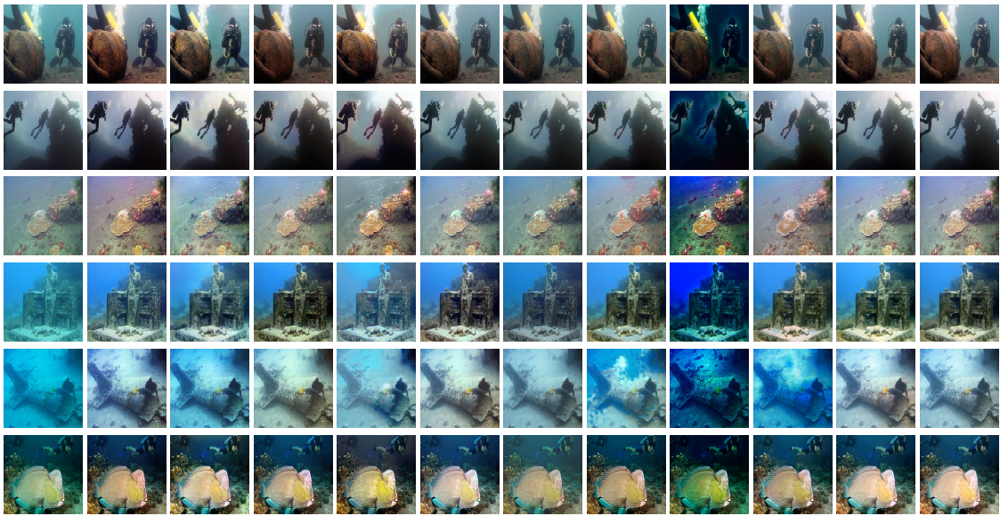

Figure 5: A comparative visual analysis of SOTA methods for different images from the LSUI400 dataset. Left to right columns show the input image, compared to outputs of models such as UGAN Fabbri et al. (2018), FUnIEGAN Islam et al. (2020b), Cycle-GAN Zhu et al. (2017), PUGAN Cong et al. (2023), RAUNE-Net Peng et al. (2024), UT-UIE Peng et al. (2023b), WaterNet Li et al. (2019b), UTM-UIE, and our models, including CNN-RATU, GFN-FTU, and GFN.

Figure 6: A comparative visual analysis of SOTA methods for different images from the ocean_ex dataset. Left to right columns show the Input image, Ground Truth, and outputs of models such as UGAN Fabbri et al. (2018), FUnIEGAN Islam et al. (2020b), Cycle-GAN Zhu et al. (2017), PUGAN Cong et al. (2023), RAUNE-Net Peng et al. (2024), UT-UIE Peng et al. (2023b), WaterNet Li et al. (2019b), UTM-UIE, and our models, including CNN-RATU, GFN-FTU, and GFN.
Figure 7: A comparative visual analysis of SOTA methods for different images from the UIEB100 dataset. Left to right columns show the Input image, Ground Truth, and outputs of models such as UGAN Fabbri et al. (2018), FUnIEGAN Islam et al. (2020b), Cycle-GAN Zhu et al. (2017), PUGAN Cong et al. (2023), RAUNE-Net Peng et al. (2024), UT-UIE Peng et al. (2023b), WaterNet Li et al. (2019b), UTM-UIE, and our models, including CNN-RATU, GFN-FTU, and GFN.
Figure 8: A comparative visual analysis of SOTA methods for different images from the UPoor200 dataset. Left to right columns show the Input image compared to outputs of models such as UGAN Fabbri et al. (2018), FUnIEGAN Islam et al. (2020b), Cycle-GAN Zhu et al. (2017), PUGAN Cong et al. (2023), RAUNE-Net Peng et al. (2024), UT-UIE Peng et al. (2023b), WaterNet Li et al. (2019b), UTM-UIE, and our models, including CNN-RATU, GFN-FTU, and GFN.

Figure 9: A comparative visual analysis of SOTA methods for different images from the U45 dataset. Left to right columns show the Input image compared to outputs of models such as UGAN Fabbri et al. (2018), FUnIEGAN Islam et al. (2020b), Cycle-GAN Zhu et al. (2017), PUGAN Cong et al. (2023), RAUNE-Net Peng et al. (2024), UT-UIE Peng et al. (2023b), WaterNet Li et al. (2019b), UTM-UIE, and our models, including CNN-RATU, GFN-FTU, and GFN.
Figure 10: A comparative visual analysis of SOTA methods for different images from the RUIE_Color90 dataset. Left to right columns show the Input image compared to outputs of models such as UGAN Fabbri et al. (2018), FUnIEGAN Islam et al. (2020b), Cycle-GAN Zhu et al. (2017), PUGAN Cong et al. (2023), RAUNE-Net Peng et al. (2024), UT-UIE Peng et al. (2023b), WaterNet Li et al. (2019b), UTM-UIE, and our models, including CNN-RATU, GFN-FTU, and GFN.
Figure 11: A comparative visual analysis of SOTA methods for different images from the challenging-60 dataset. Left to right columns show the Input image compared to outputs of models such as UGAN Fabbri et al. (2018), FUnIEGAN Islam et al. (2020b), Cycle-GAN Zhu et al. (2017), PUGAN Cong et al. (2023), RAUNE-Net Peng et al. (2024), UT-UIE Peng et al. (2023b), WaterNet Li et al. (2019b), UTM-UIE, and our models, including CNN-RATU, GFN-FTU, and GFN.
Figure 12: Comparative visual analysis of SOTA methods for selected images from the KUMP dataset. Left to right columns display the Input image and outputs of models such as UGAN Fabbri et al. (2018), FUnIEGAN Islam et al. (2020b), Cycle-GAN Zhu et al. (2017), PUGAN Cong et al. (2023), RAUNE-Net Peng et al. (2024), UT-UIE Peng et al. (2023b), WaterNet Li et al. (2019b), UTM-UIE, and our models, including CNN-RATU, GFN-FTU, and GFN.
.png)


.png)